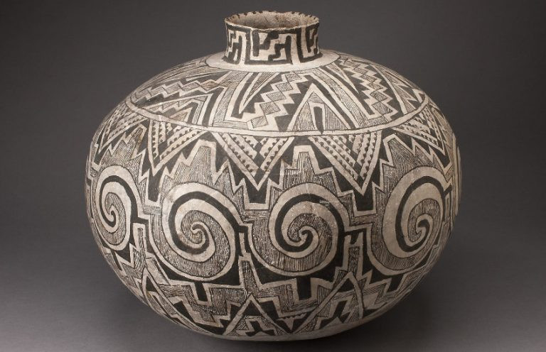
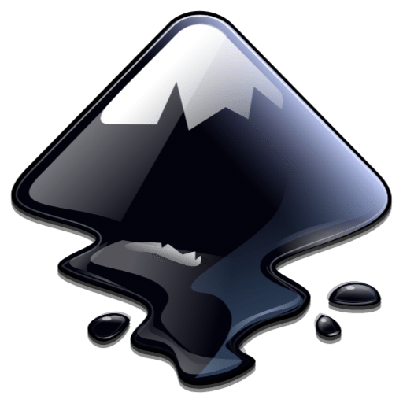

Students design geometric artwork in Inkscape, convert it into a jigsaw, and laser-cut a take-home puzzle.
Schedule This Field TripField Trip Preparation
Complete the Puzzle Design worksheet before the visit. This project aligns with Arizona Mathematics Standards 6.G.A.1 (area of polygons by composing/decomposing shapes) and 6.G.A.3 (polygons in the coordinate plane).
How Art Is Created from Shapes

Explore geometric art examples including Navajo rugs, Anasazi pottery, Pueblo pottery, pictographs and symbols, and modern geometric art.

Inkscape IntroductionInkscape is a free vector drawing program. Vector drawings stay sharp when scaled and are perfect for laser engraving and cutting. Students draw shapes, add text, color, and patterns to create logos, posters, stickers, and puzzle art.
Things to Know Before You Get Started
What is Inkscape? What size is your puzzle in millimeters? How will the laser show your picture? The laser uses an SVG (Scalable Vector Graphic) file. Overview video: SVG & laser basics.
Drawing Circles, Squares, Rectangles, Triangles, and Other Shapes
Practice drawing shapes with Inkscape’s shape tools: Inkscape shapes video.
Adding Text to Your Art
Learn how to make text look great in Inkscape and personalize your puzzle design.
Using the Laser Cut Jigsaw Extension
In Inkscape: Extensions → Render → Lasercut Jigsaw. Set width and height in millimeters, corner radius, and pieces across/down, then apply. Walkthrough: Lasercut Jigsaw video.
Saving Your SVG and Uploading to the Laser Machine
Save as Plain SVG (*.svg) to your Downloads folder with your name as the filename. Then upload the artwork to the laser machine for cutting.
Using Acrylic Pens to Color Your Puzzle
Acrylic paint pens offer pen precision with a paint finish. They’re beginner-friendly, work on many surfaces, and dry quickly for easy layering. Use them like a paintbrush rather than a marker.
Resources & Worksheets
- Field Trip Preparation (resource)
- Field Trip Preparation (book)
- Field Trip Preparation (url)
Full lesson plans, worksheets, and media are also available in the Steamspace Moodle course.